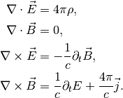
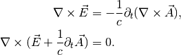
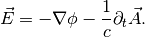
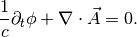
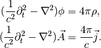
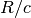
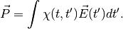

Causality¶
Field theory shows a lot of casality conditions. Here is a collection of them.
Radiation¶
Maxwell’s equations in vacuum are

To write down the wave equation, we could switch to the scalar potential  and vector potential
and vector potential  .
.
Divergence free means that we can always have

By using the above relation, I could rewrite this to

This means I can write all inside divergance written as a gradient of a scalar function or a constant time the gradient of some scalar function.

With the definition of scalar and vector potentials, we could plug them in and find the wave equations. However, since the values of these potential are gauge dependent, I should choose a convinient gauge. Hereby, I use Lorenz gauge.

The importance of this gauge is that it is Lorentz invariant.
Using this gauge the two other Maxwell’s equations, I have the wave equations,

Solving these Helmholtz equations, I get the solution as a function of retarted time  , where
, where  .
.

Here it clearly shows that the observation depends on the history  ago. This is the signal propagation time.
Response of Matter¶
